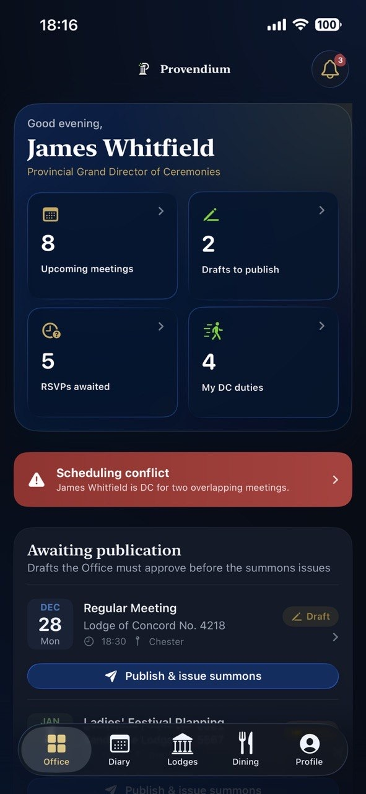
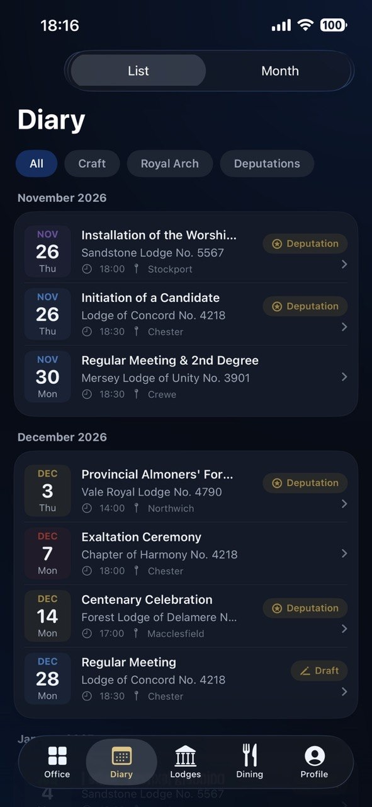
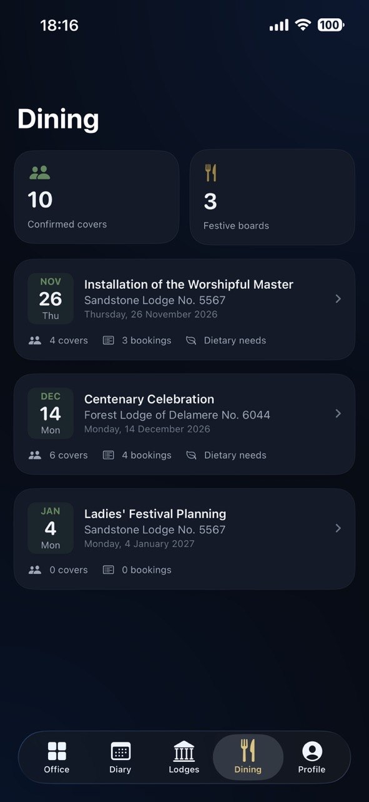

One source of truth for your Province.
Provendium® is a secure platform for the Provinces of English Freemasonry. Most people meet it as a calendar like the one below. The calendar is one part of it.
- 3WedLodge of Fidelity No. 289Regular meeting, 6:30pm, Masonic Hall
- 5FriChapter of Unity No. 321Installation, 6:00pm, Provincial Hall
- 10WedLodge of St John No. 104Installation, 6:00pm, Masonic Hall
- 12FriChapter of Harmony No. 58Convocation, 6:30pm, Provincial Hall
- 13SatProvincial Grand LodgeAnnual meeting, 2:00pm, Provincial Hall
- 17WedLodge of Benevolence No. 336Centenary meeting, 5:00pm, Masonic Hall
- 21SunProvincial Garden PartySocial, 1:00pm, The Grange
- 24WedLodge of Unanimity No. 89Regular meeting, 6:30pm, Masonic Hall
- 26FriChapter of Fidelity No. 289Convocation, 6:30pm, Provincial Hall
It is not just a diary.
The diary was the first problem Provendium solved, because it was the most urgent one. It was never the whole plan.
A compendium gathers everything of value into one authoritative volume. Provendium does that for a Province: one trusted record of its members, Lodges and Chapters, kept current every day, with everything else working from it.
Provincial compendium
- The Provincial record
- One record for every member, Lodge and Chapter, with the offices and ranks they hold.
- Meetings and the diary
- Every meeting, from regular meetings to Provincial celebrations, with ticketing for the larger occasions.
- Lodge and Chapter administration
- The Summons Builder, officers and Installations, working from the same records.
- Dining and hospitality
- Replies, seating and dietary needs, from the invitation to the festive board.
- Leadership and reporting
- What the Rulers, the Office and the Areas need to see, on screen or exported.
- The member's own view
- Every Brother and Companion's meetings, invitations and record, on the web and in the Provendium app.
- The platform underneath
- One sign-in, one set of permissions, and the Provendium API for your website and other Provincial services.
Each part is switched on when a Province is ready for it. New parts are added on the same foundation.
Follow one meeting through it
The meeting ringed in gold above is the Installation of Lodge of St John No. 104. Here is everything that happens around it, and which part of Provendium does the work. The screens are illustrative, with made-up names.
-
Before anyone types anything
The meeting is already in the diary
The Lodge's meetings are created from the record of when it meets. Nobody keys in a year of dates, and the officers shown against each meeting come from the same record.
The Provincial recordLodge of St John No. 104
CraftMeets on the 2nd Wednesday, September to June, at the Masonic Hall
- Wednesday 8 April 2026Regular meeting, 6:30pmPublished
- Wednesday 13 May 2026Regular meeting, 6:30pmPublished
- Wednesday 10 June 2026Installation, 6:00pmPublished
-
Five weeks before
The Secretary builds the summons
The Summons Builder writes the summons from the Lodge's own records, in the Lodge's established layout. The officers, the ranks, the dates and the minutes date are filled in, so they cannot be mistyped.
Lodge and Chapter administrationSummons: Installation, 10 June
Issued, version 3Business of the evening
- To open the Lodge.
- To confirm the minutes of the meeting held on Wednesday 13 May 2026.
- To ballot for Mr J. Ellison, a candidate for initiation.
- To install the Master Elect, Bro. A. Hartley.
- To invest the officers for the ensuing year.
-
Four weeks before
The invitations go out, and the replies come back
The people who should be there are invited by email and reply in one click, with no login. Nobody copies replies into a spreadsheet, and reminders are chased for you.
Meetings and the diaryAttending46Dining41Apologies9Awaiting4- AHA. HartleyMaster ElectAttending, dining
- DOD. OkaforJunior WardenAttending, dining (vegetarian)
- PLP. LindqvistPast MasterApologies
- GTG. TannerJunior DeaconReminder sent
-
The week before
The festive board is seated
Everyone who said they are dining is ready to place. The DC team arranges the top table and the sprigs, prints the place cards, and the caterer gets the dietary sheet.
Dining and hospitalityFestive board: seating
41 dining -
Afterwards
The record is already up to date
The new officers are on the Lodge's register and on each Brother's record of service. The Installation appears in the reports the Province's leadership reads, without anyone sending a return.
Leadership and reportingAfter the Installation
Meeting closed- Officers for the yearLodge register and members' recordsUpdated
- Attendance46 present, including 7 visiting officersRecorded
- Installations reportFor the Rulers and the AreaIncluded
- Next meetingWednesday 9 September 2026Published
And in your pocket: the Provendium app
The same record, the same sign-in and the same permissions, on an iPhone. A member sees his own meetings and invitations. The Office and the DC team see what needs their attention.
Meetings, directions and seating are kept on the phone, so they are there even with no signal at the venue.



And the parts that meeting did not need
An Installation uses a good deal of Provendium. It does not use all of it.
- TicketingTickets for Provincial Grand Lodge and other large occasions. Members book with their own sign-in, so there is no form and no separate guest list.
About ticketing - The Summons BuilderFor every regular meeting too: the candidates, the ballots and the Past Masters roll, drawn from the record each month.
About the Summons Builder - The Provendium APIYour Provincial website, Lodge websites and other Provincial services read the same live data, without keeping copies of it.
About the API
What do you do in the Province?
Everyone works from the same record and sees what their role needs. Choose yours.
The Provincial Office
The record, the diary and the administration in one place
- One record, kept currentMembers, Lodges, Chapters, offices and ranks, refreshed every day and checked before anything changes.
- Registers that show the gapsEvery unit's officers, filled and vacant, and worklists for details that are missing.
- Provincial celebrations and ticketingAnniversaries and centenaries flagged ahead of time, the team invited and chased, and tickets added to any event.
- Reports on screen or exportedOfficers, meetings, replies and communications, without building a spreadsheet.
Lodge of St John No. 104: officers
2 offices vacant- AHA. HartleyWorshipful MasterSince June 2026
- DOD. OkaforSenior WardenSince June 2026
- VacantJunior WardenTo be appointed
- RMR. MehtaSecretarySince June 2023
- VacantAlmonerTo be appointed
Rulers and Area leaders
What you need to run the Province, without asking for a report
- Membership at a glanceGains and losses by month and by Area, with a summary for each Lodge and Chapter.
- Installations and their RepresentativesEvery confirmed Installation, who is representing the Province, and notices sent when anything changes.
- Your own AreasEach leader sees the Areas they are responsible for, and no more.
Membership by Area, year to date
Craft| Area | Joined | Left | Net |
|---|---|---|---|
| Area 1 | 11 | 6 | +5 |
| Area 2 | 7 | 9 | -2 |
| Area 3 | 9 | 5 | +4 |
| Area 4 | 6 | 7 | -1 |
| Area 5 | 5 | 4 | +1 |
Secretaries and Scribes
Less paperwork, and nothing typed twice
- Your meetings are already thereConfirm the work and publish. The diary, your website and your members' calendars follow.
- The Summons BuilderThe summons written from your Lodge's records, in your Lodge's layout, instead of edited by hand each month.
- A weekly updateOne email on a Sunday evening with what is coming up and what needs your attention.
- Notices that send themselvesIf a meeting moves or is cancelled, the right people are told.
Your weekly update
Sunday evening- Wednesday 10 June, InstallationSummons issued, 55 of 59 replies inReady
- Wednesday 9 September, Regular meetingThe work has not been entered yetNeeds the work
- Wednesday 14 October, Regular meetingSummons not yet startedIn good time
The DC team
Who is going where, and who is confirmed
- A diary for the teamA DC assigned to each occasion, with their tasks and any last-minute changes.
- Attendance lists to printConfirmed attendees for each occasion, in order of precedence.
- Seating for the festive boardArrange the top table and the sprigs, then print the plan and the place cards.
DC diary: this week
3 occasions- JWLodge of St John No. 104, InstallationWed 10 June, J. Whitfield assignedList printed
- SBChapter of Harmony No. 58, ConvocationFri 12 June, S. Brennan assigned1 change
- AllProvincial Grand Lodge, Annual meetingSat 13 June, the whole teamBriefing ready
Members
Your Freemasonry in one place
- Your meetingsEvery meeting of your own Lodges and Chapters, with the work, the venue, directions and the summons.
- The whole Province's diarySearch it by Area, unit or work, and subscribe on your phone. It stays current.
- Reply in one clickNo login and no password. Say whether you are attending and whether you are dining.
- The Provendium appAll of it on your iPhone, with reminders, and available with no signal at the venue.
You are invited
CraftBuilt for the discretion Freemasonry expects.
- The data belongs to the Province, which decides how it is used.
- Each Province is kept separate from every other.
- Contact, dietary and health details are encrypted.
- Members see only what their role needs.
The diary was where it started.
If you spotted Provendium on your Province's calendar, or you are a Province considering it, we would be glad to show you the rest.